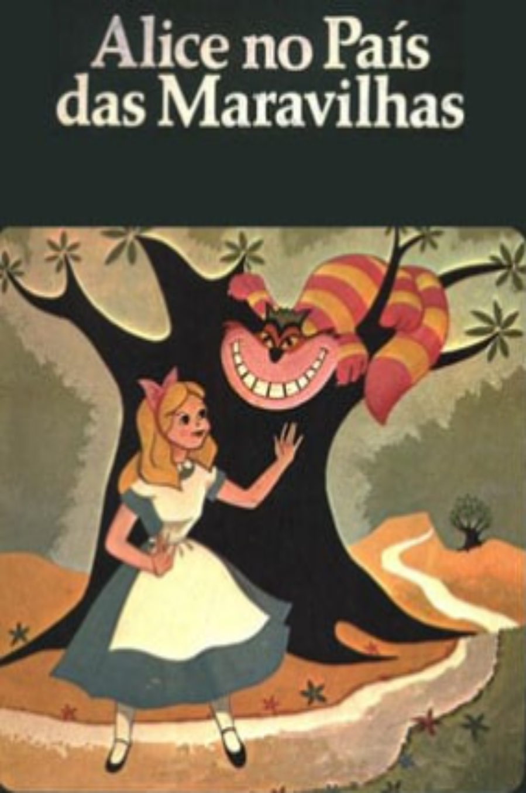

Alice no País das Maravilhas
Publicado em 1865
Sinopse
A obra narra a aventura de Alice, uma menina que cai em uma toca de coelho e chega a um mundo fantástico e ilógico, cheio de personagens excêntricos. A história explora imaginação, curiosidade e absurdo, tornando-se um clássico da literatura infantil e fantasia.
Críticas
Os críticos elogiam a obra por sua imaginação fértil, humor absurdo e criatividade narrativa. Destacam como Carroll cria um universo lúdico e simbólico, capaz de encantar crianças e adultos, sendo reconhecida como um clássico da literatura infantil e da fantasia.